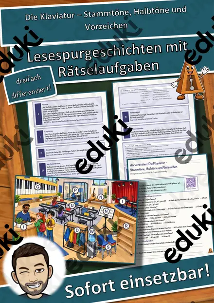

Steckbriefe Komponisten – Materialpaket (12 Komponisten vom Barock bis zum Impressionismus, differenziert, mit Lösungen)
12 Steckbriefe zum Thema Komponisten: Mit diesem Materialpaket erarbeiten Ihre Schülerinnen und Schüler die wichtigsten Informationen im bewährten Snice-Steckbrief-Format – übersichtlich, mit großem Bild in der Mitte und klaren Feldern zum Ausfüllen.
Jeder Steckbrief deckt diese Punkte ab:
- Lebensdaten
- Geburtsort
- Epoche
- Wichtige Instrumente
- Bekannte Werke
- Typisch für seine Musik
- Wichtige Wirkungsorte
- Besondere Tatsache
- Herkunftsland
- Das möchte ich mir über ihn merken
Enthalten: Vivaldi, Bach, Händel, Haydn, Mozart, Beethoven, Schubert, Chopin, Verdi, Wagner, Tschaikowski, Debussy.
Zweifach differenziert:
- ★ Die Schülerinnen und Schüler füllen den Steckbrief mit Hilfe der Infokarten aus.
- ★★ Die Schülerinnen und Schüler füllen den Steckbrief ohne Infokarten aus (Vorwissen, Schulbuch, Lexikon, Recherche).
Inhalt (35 Seiten):
- Deckblatt
- Plakat mit allen 12 Steckbrief-Themen (auch als Klassenraum-Plakat geeignet)
- 12 Steckbriefe zum Ausfüllen
- 12 Infokarten (2 je Seite) als Hilfe
- Rätselseite „Welcher Komponist bin ich?“
- Ausmalseite: Musik-Mandala
- 12 ausgefüllte Steckbriefe als Lösung zur Selbstkontrolle
- Lösungen zur Rätselseite, Quellen und Hinweise
Ideal für Einzel-, Partner- und Gruppenarbeit, Referate, Stationenlernen, Vertretungsstunden und als Wiederholung. Die Texte habe ich mit KI-Unterstützung erstellt und fachlich geprüft; die Bildquellen (gemeinfrei bzw. freie Lizenzen) stehen im Material.
Viel Freude mit dem Material wünscht Snice! :)
Ähnliche Materialien

Orff-Instrumente – Mal-, Hör- und Forscherheft mit Postern, Kl. 1–4

Persönlichkeiten-Werkstatt: Mozart – Steckbrief zum Lesen und Ausfüllen, Klasse 3–4 (kostenlos)

Persönlichkeiten-Werkstatt: Mozart – Plus-Paket mit Texten in 3 Stufen, Quiz und Aktion, Klasse 3–4

Hörwerkstatt Geräusche – Gesamtpaket: 6 Einheiten mit Hörstationen, 3 Stufen (Klasse 2–4)

Hörwerkstatt Geräusche: Geräuschemacher im Geisterhaus – Hörstation, 3 Stufen & Test (Klasse 2–4)

Hörwerkstatt Geräusche: Laut, leise, hoch, tief – Hörstation, 3 Stufen & Test (Klasse 2–4)

Das Weihnachtsoratorium – Chor, Arie und Rezitativ – Lesespurgeschichte mit Rätselaufgaben (Klasse 7)
